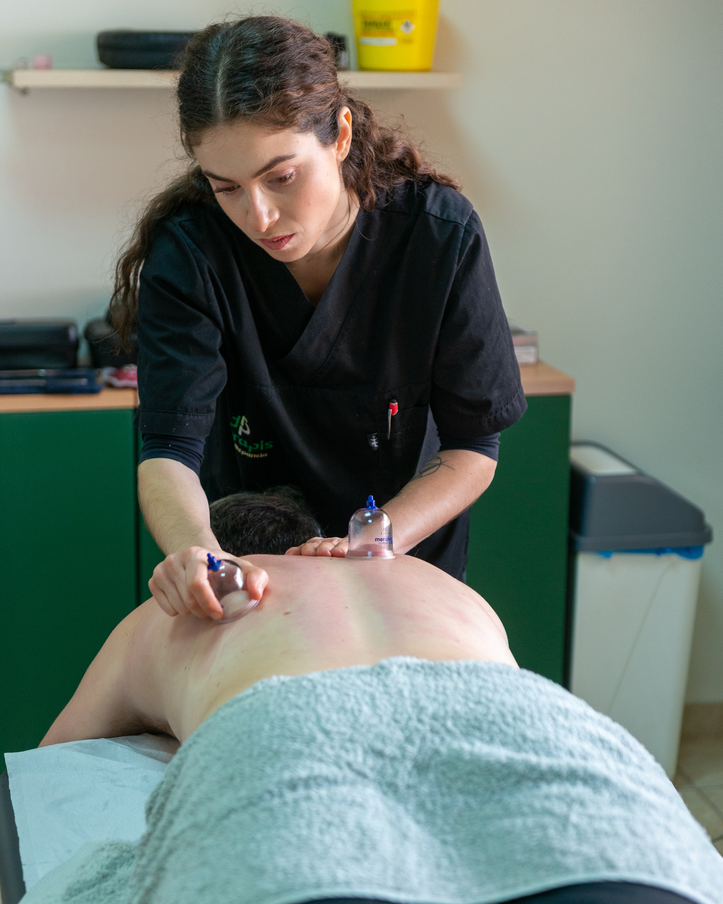
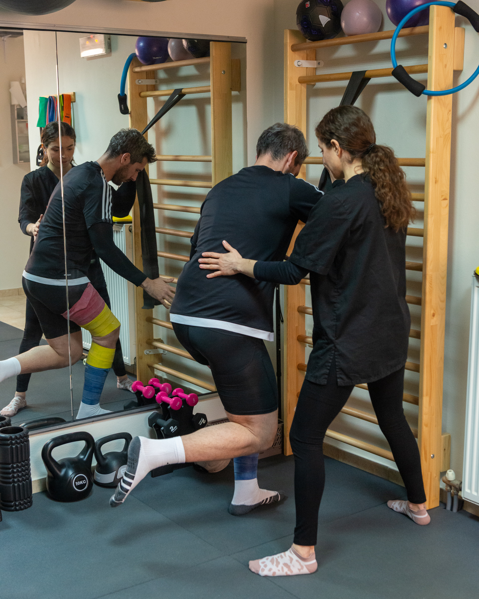
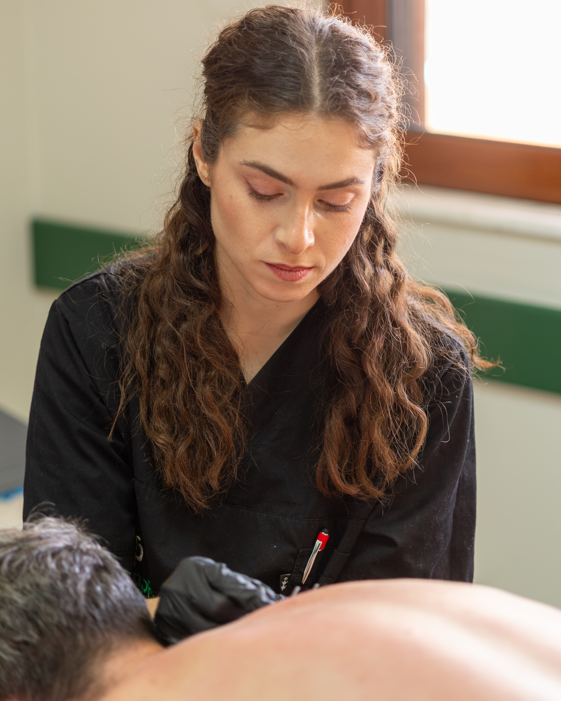
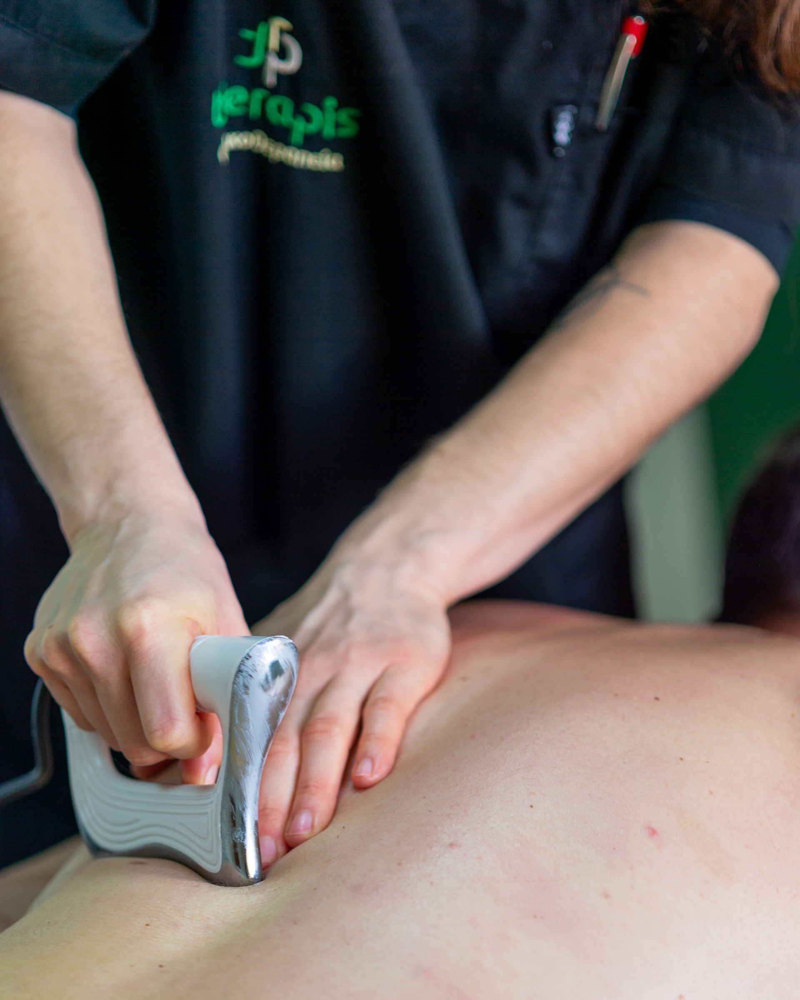
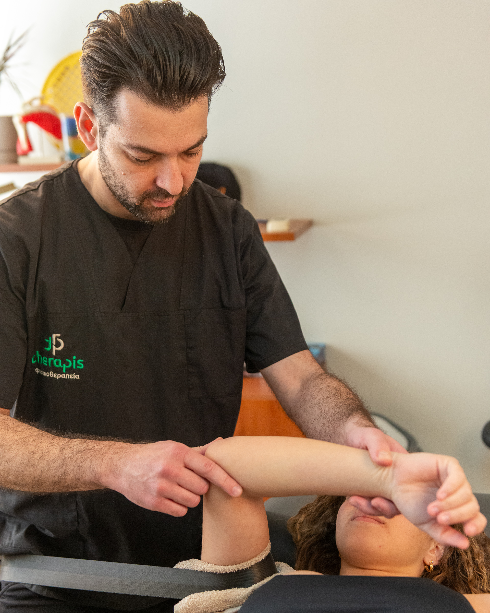

Cupping Therapy
A technique that uses negative pressure to decompress muscles and increase blood flow to the targeted area.


A technique that uses negative pressure to decompress muscles and increase blood flow to the targeted area.
A technique in which specialized Kinetic Flossing bands are applied to the affected limb/joint (e.g., thigh or arm) to restrict venous return while maintaining arterial inflow during exercise. Restricted blood flow creates metabolic accumulation and increased muscle fiber recruitment, even with low loads or no weights. The goal is muscle strengthening and hypertrophy, prevention of muscle atrophy, improved endurance, and faster return to functional activities. It is used in post-operative rehabilitation, injuries, joints with limited load tolerance, or in patients unable to lift heavy weights.


The use of fine needles to release painful trigger points and manage chronic pain conditions.
Instrument-Assisted Soft Tissue Mobilization using specialized stainless-steel tools from the ERGON Technique, designed to adapt to the anatomical curves of the body. This allows precise detection and treatment of myofascial adhesions and fibrosis. The technique is applied based on advanced clinical training, including completion of both Basic and Advanced certification courses. It combines static and dynamic manipulations aimed at immediate pain reduction, increased tissue elasticity, and improved joint range of motion. Its application accelerates the healing process, offering an effective, non-invasive solution for faster return to daily activities. The combined application of IASTM with TECAR therapy is another specialized tool available at Therapis Physiotherapy Center. Targeted soft tissue mobilization is enhanced through deep endogenous radiofrequency heat, significantly accelerating metabolic activity and tissue regeneration for both immediate and long-lasting therapeutic results.


Therapeutic exercise is a fundamental pillar of modern physiotherapy and is supported by international organizations such as World Physiotherapy as a primary intervention for musculoskeletal, neurological, cardiorespiratory, and chronic conditions. It goes beyond simply prescribing exercises; it represents a holistic approach that promotes patient engagement, education on the importance of exercise, and empowerment in self-management. Individualized exercise programs are created according to each patient’s needs to retrain movement patterns and reduce kinesiophobia (fear of movement).
Application of elastic therapeutic tape to support joints and reduce swelling without restricting movement.